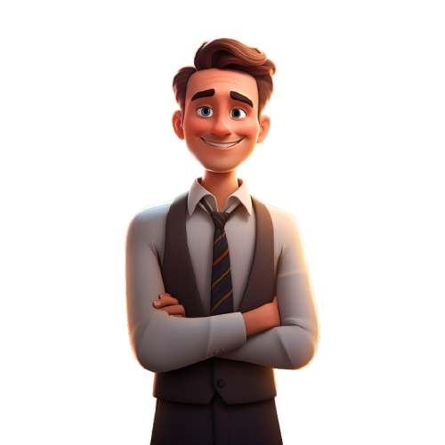

🕊️
La Colombe
& l'Homme
BTS SIO2 — Carnet de présentation
cliquez pour ouvrir →
Assistant
Son: ON
Prof Eliott: ON
←
→
✕
← → flèches · glisser · molette
Sommaire
1. Présentation de l'animal
2. Contes & Légendes
3. La colombe au Moyen Âge
4. La colombe aujourd'hui
5. Débats actuels
6. Conclusion & Quiz
⛶
Plein écran

📋
📝
Clique sur Eliott ou sur un element de la page pour afficher une anecdote.
Prof Eliott
✕